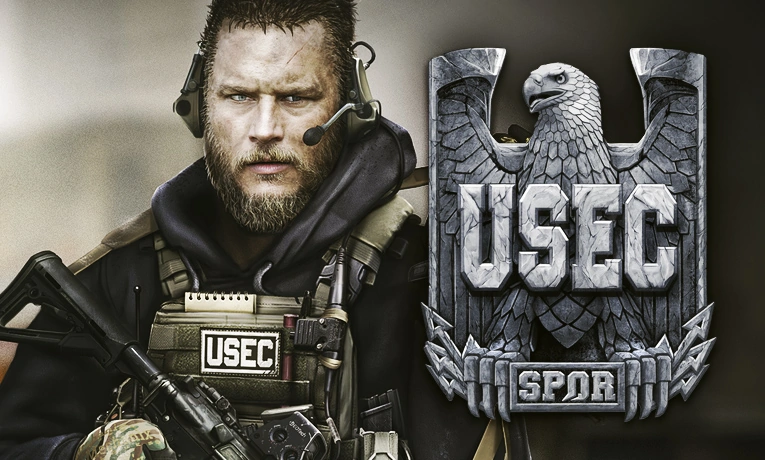
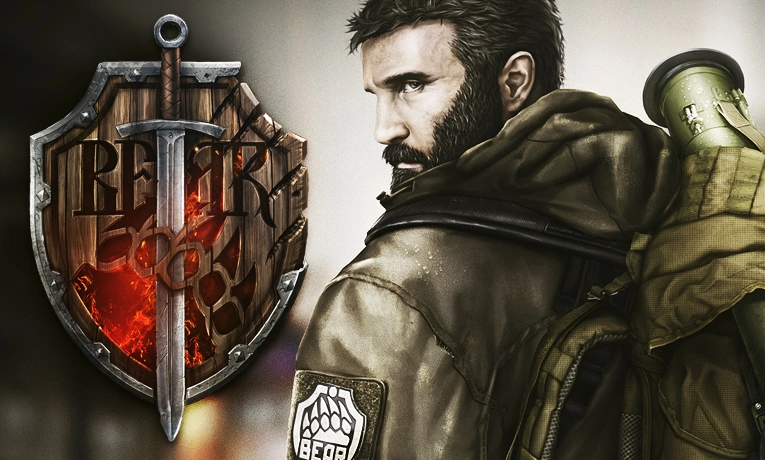

События Escape from Tarkov / Побега из Таркова происходят в вымышленной Норвинской особой экономической зоне, бывшей в пору своего расцвета мостом между Россией и Европой.
К несчастью, льготные условия налогообложения и преференции для иностранных инвесторов привлекли к региону внимание не только законопослушных компаний, но и корпорации с более чем сомнительными намерениями.
В Таркове, одном из крупнейших городов региона, разразился коррупционный скандал, в эпицентре которого оказалась трансатлантическая корпорация.
Шесть месяцев спустя, политическое противостояние вылилось в открытые вооруженные столкновения на улицах города между миротворцами ООН, внутренними войсками МВД и двумя частными военными компаниями.
Границы области были вскоре заблокированы, отрезая от внешнего мира тех, кто попал в ловушку разгорающегося локального конфликта.

Главными действующими силами в Норвинской области остаются две частные военные компании, нанятые сторонами изначального конфликта.
USEC, нанятые скандально известной международной корпорацией Terra Group, в яростных схватках защищают объекты работодателя, активно препятствуя проводимому местными властями расследованию деятельности корпорации.
Более того, по данным разведслужб, USEC также обеспечивает силовую поддержку и прикрытие незаконных работ и исследований иностранной компании.
Им противостоит частная военная структура BEAR, по слухам, созданная по приказу Правительства России.
Но формально нанятая властями Норвинской области для расследования и добычи любых доказательств противоправных действий Terra Group.
